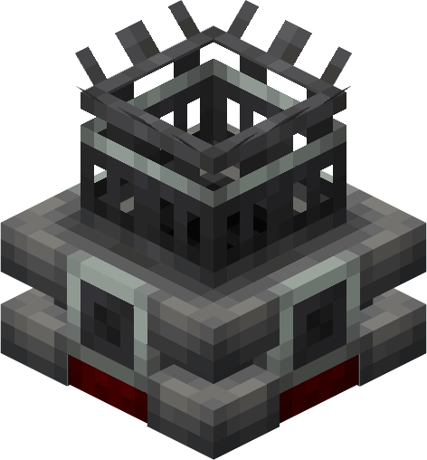
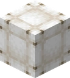
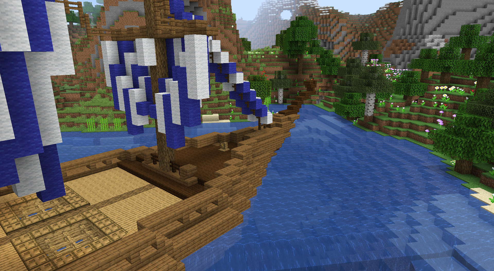
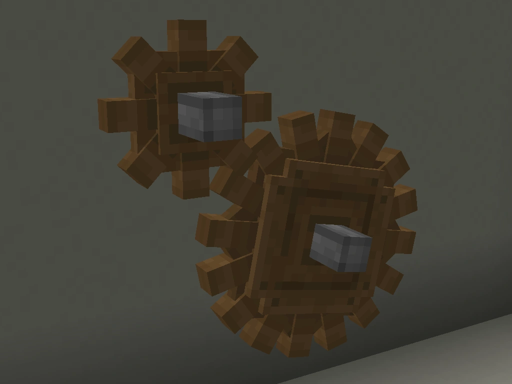
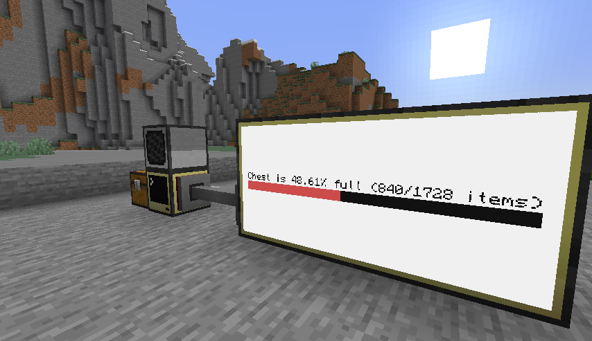
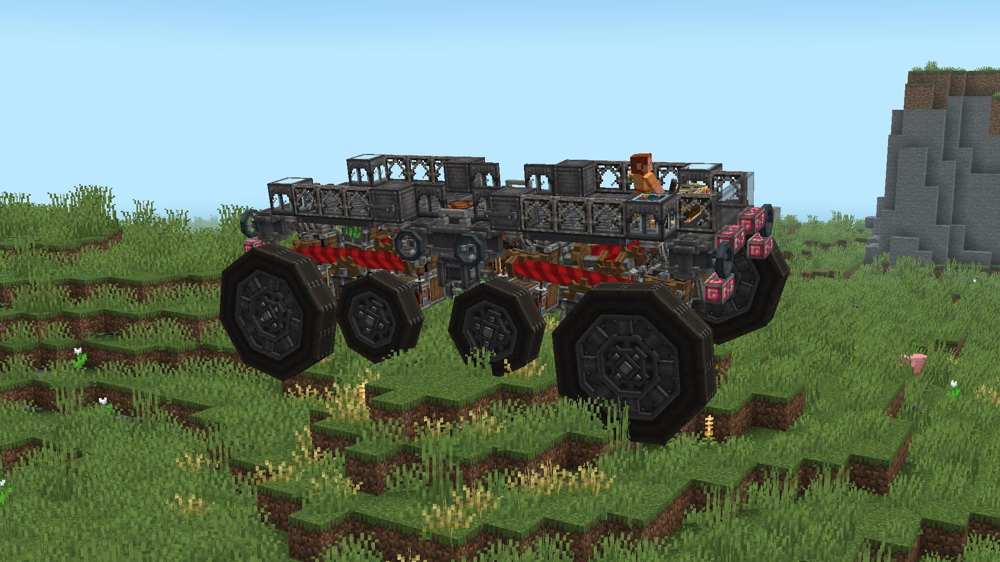
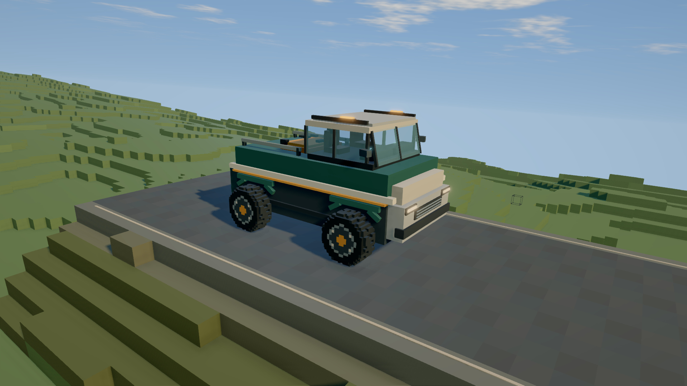
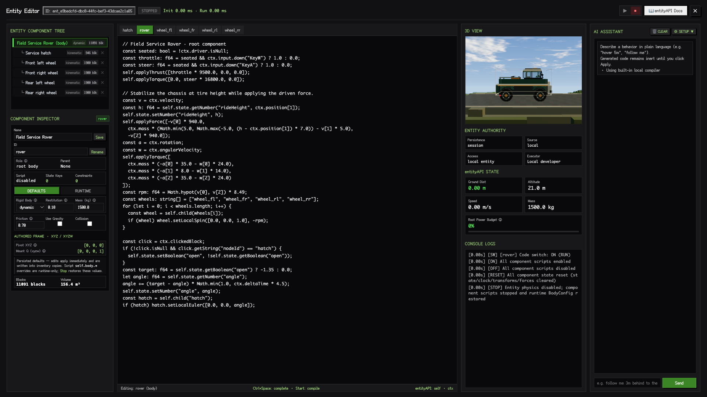

行为
物理→
控制→
自动化
代码：控制与自动化
Minecraft · 推力与控制
由 功能方块 实现
MODCreate Aeronautics
 Modrinth · Create Aeronautics
Modrinth · Create Aeronautics
螺旋桨轴承接 Create 旋转动力

热空气燃烧室给气囊充气

气囊提供升力
功能方块产生推力 / 升力
MODValkyrien Skies + Eureka!

 Modrinth · Valkyrien Skies / Eureka!
Modrinth · Valkyrien Skies / Eureka!
Valkyrien Skies负责物理
Eureka! 引擎 · 气球推力与升力
船舵驾驶
功能方块产生推力 / 升力
Minecraft · 信号、传动与编程
功能部件也是方块
 Minecraft Wiki
Minecraft Wiki
Create Wiki CC: Tweaked
CC: Tweaked

Space 的取舍
Space 不设这类功能部件
MINECRAFT
外观与逻辑在同一个方块里
功能方块=外形+功能
螺旋桨轴承燃烧室引擎 / 气球 / 船舵红石线路齿轮 / 传动轴计算机

Modrinth · Create Aeronautics 外形方块 + 功能方块
SPACE 不采用
红石式控制系统
Create 式传动机制
SPACE
外观与逻辑解耦
方块→只负责形状
实体脚本→逻辑

外形方块 + 一段脚本
计算以 实体 为单位→
跨设备→
在不同核心中运行
其次体素数量↓
取而代之的是 脚本
SCRIPT推力 · 升力 · 控制
ROVER · 组件脚本
const throttle = seated && ctx.input.down("KeyW") ? 1.0 : 0.0;
self.applyThrust([throttle * 9500.0, 0.0, 0.0]);
self.applyTorque([0.0, steer * 16800.0, 0.0]);
wheel.setLocalSpin([0.0, 0.0, 1.0], -rpm);
hatch.setLocalEuler([0.0, 0.0, angle]);
READ读取 座椅 · 按键 · 点击
BODY对刚体施加 推力 / 力矩
CHILD子组件 · 车轮转动
CHILD子组件 · 舱门开合
前面的 螺旋桨 也是这样
PROPELLER · 组件脚本
// 桨叶怎么转
hub.setLocalSpin([1.0, 0.0, 0.0], 24.0 + spool * 116.0);
// 前向推力与机翼升力
self.applyThrust([thrust, 0.0, 0.0]);
self.applyForce([0.0, ctx.mass * lift, 0.0]);
脚本AssemblyScript
→
编译WebAssembly
→
运行沙盒
加载他人分享的作品同样 安全
AssemblyScript → WebAssembly 沙盒
用自然语言 生成脚本或实体
-
描述想要的行为
按下 W 时加速，点击舱门时切换开合。
-
Agent 生成
脚本片段或完整实体模型

控制之外
是 自动化
MINECRAFT自动农场侦测器 · 活塞 · 漏斗
 原版红石
Minecraft Wiki
原版红石
Minecraft Wiki
红石搭建
MODCC: Tweaked海龟机器人
可编程的海龟机器人
CC: Tweaked
探测挖掘铺设方块联网通信
Space 用 脚本 做到同样的事
PAVER铺路机
raycast探测地面
voxels.paint逐格铺设
RADAR雷达塔
world.entities发现实体靠近
messages.send"gate.open" → 闸门
GATE闸门自动打开
区别在于 计算发生在哪里
NEXT · 06运行机制：计算在哪里发生